Requerimientos y Diseño del Sistema
Especificación completa de requerimientos funcionales, no funcionales, historias de usuario, diseño arquitectónico y diagramas UML del sistema QhawAI.
1.1 Requerimientos Funcionales
1.2 Requerimientos No Funcionales
1.3 Reglas de Negocio
1.5 Historias de Usuario
- El sistema detecta el rostro en menos de 2 segundos
- Muestra nombre, foto y estado (puntual/tarde) al registrar
- Registra solo una vez por persona por día
- Permite cambiar entre cámara frontal y trasera
- Funciona sin internet (modo offline)
- La notificación llega en menos de 30 segundos del registro
- Indica nombre, hora de llegada y estado (puntual/tarde)
- Si llega tarde, indica cuántos minutos de retraso
- Funciona en segundo plano sin abrir la app
- Permite filtrar por grado, tipo de persona y rango de fechas
- Muestra asistencias y faltas diferenciadas
- Exporta a PDF y Excel con formato legible
- Incluye docentes y estudiantes
- Captura múltiples fotos del rostro
- Confirma el enrollment exitoso
- El alumno es reconocible en el siguiente reconocimiento
- Permite enrollment desde cámara web o imagen cargada
- El app guarda registros localmente sin internet
- Al recuperar conexión, sincroniza automáticamente
- Los registros offline calculan tardanza correctamente
- No duplica registros ya existentes en el servidor
- Muestra foto del rostro capturado y frame panorámico
- Filtros por nombre, grado, turno y estado de tardanza
- Actualización en tiempo real sin recargar la página
- Permite eliminar registros erróneos (super admin)
2. Flujos de Navegación
Sistema Web (Laravel)
App Móvil Android
Capturas del Prototipo Web
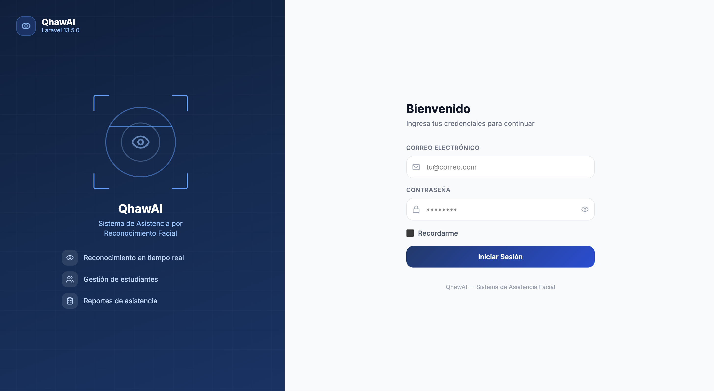
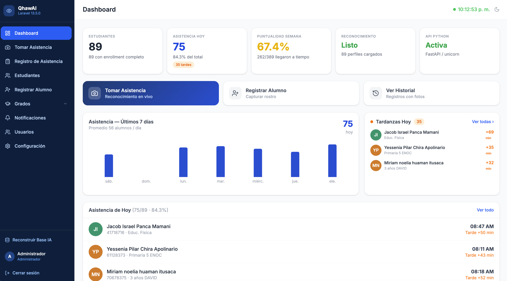
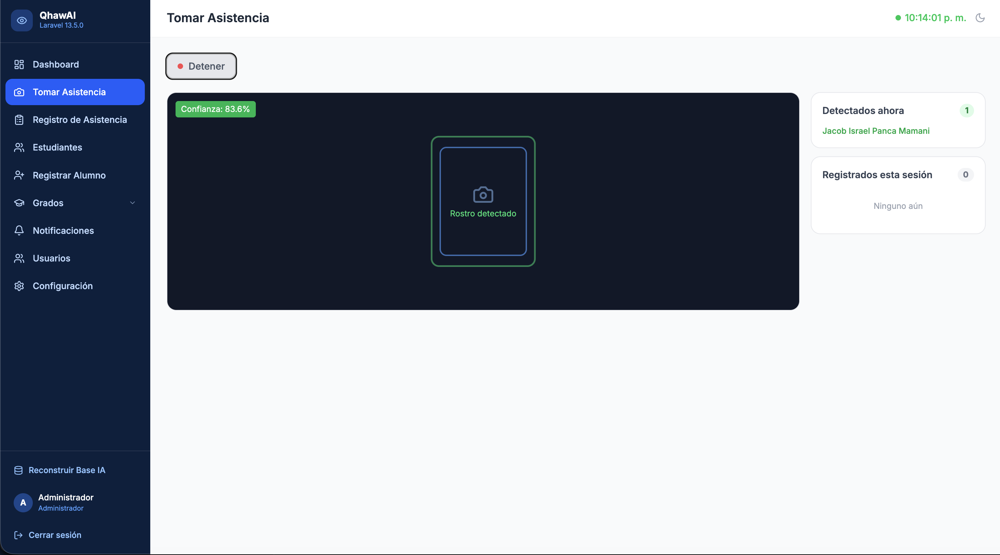
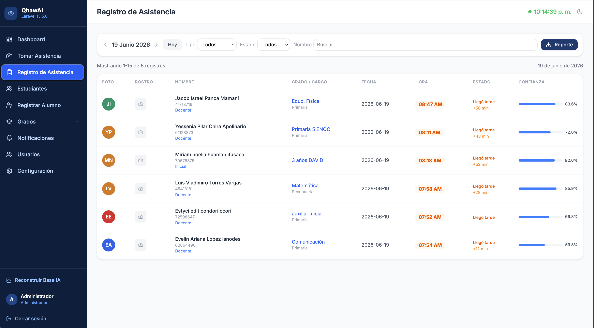
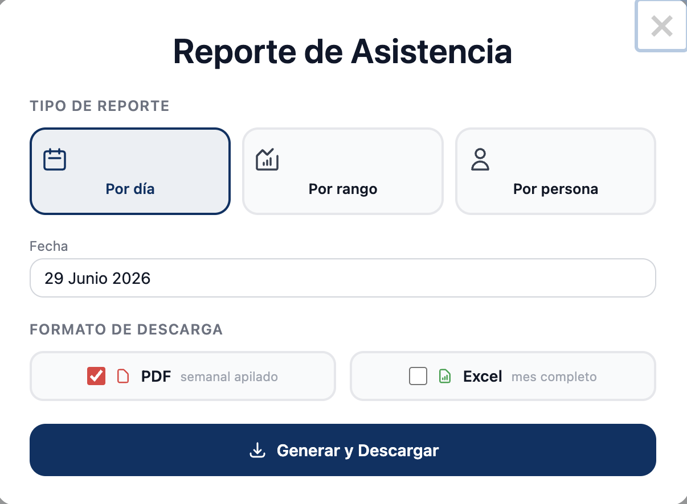
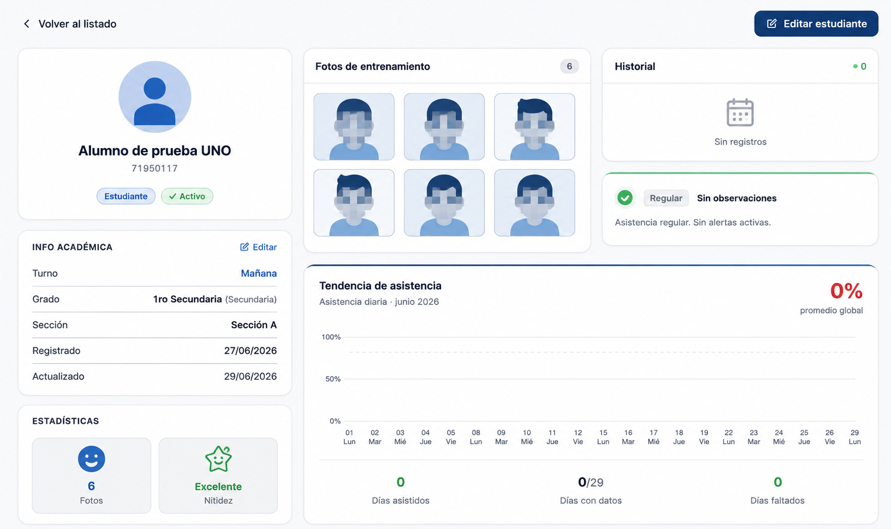
Capturas del Prototipo Móvil Android
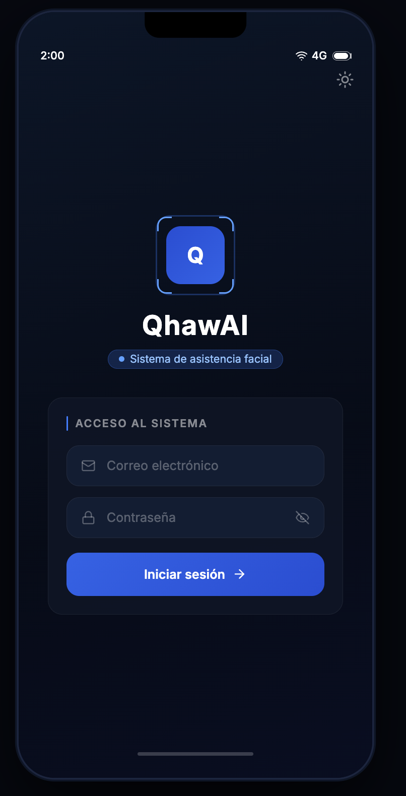
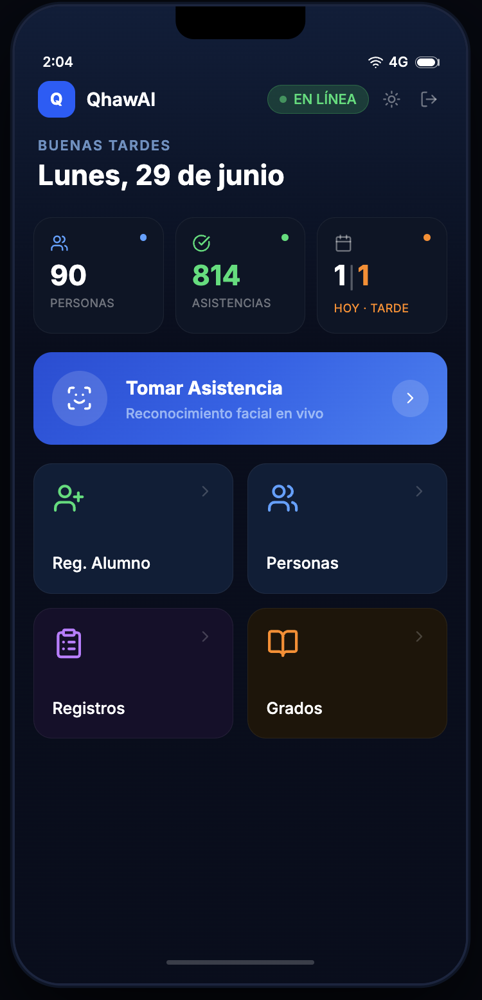
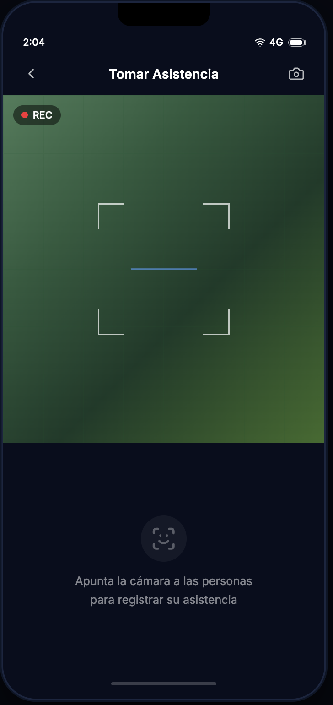
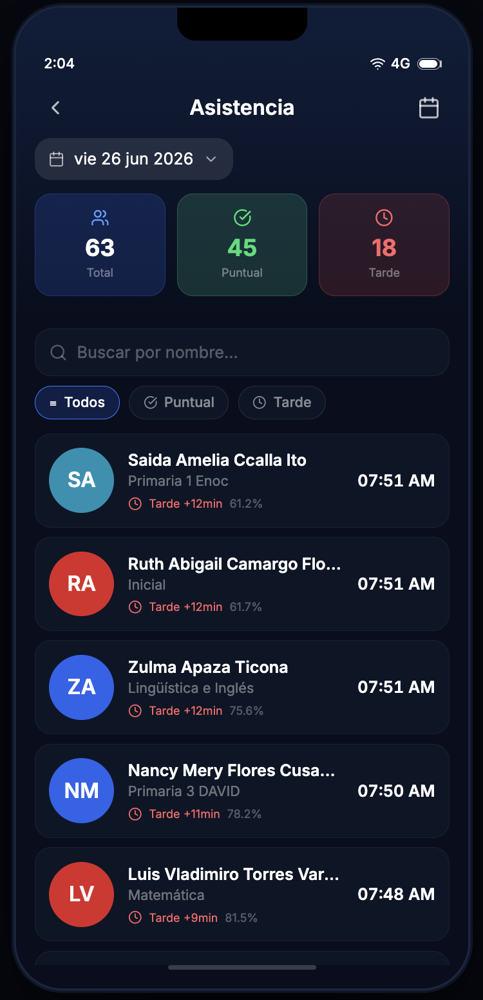
3. Diseño Arquitectónico
Diagrama de Arquitectura
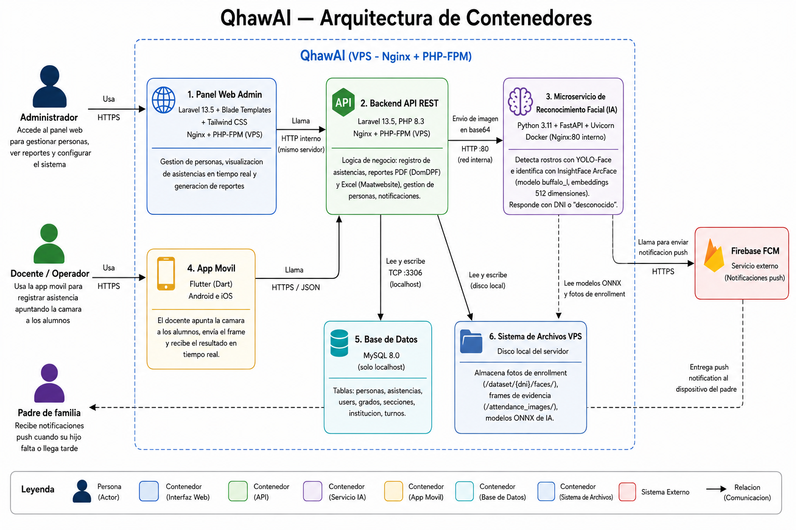
Decisiones Arquitectónicas (ADR)
| ID | Decisión | Motivo |
|---|---|---|
| DA-01 | Python separado de Laravel | Los modelos de IA (InsightFace, YOLO) son bibliotecas Python sin equivalente maduro en PHP. Permite actualizar el modelo sin modificar el backend web. |
| DA-02 | MySQL como única fuente de verdad | Laravel escribe todas las asistencias en MySQL. Python solo reconoce y devuelve resultados, sin persistir datos relacionales. |
| DA-03 | Imágenes almacenadas en servidor Python | Python tiene acceso directo al frame de la cámara. Evita transferir imágenes innecesariamente de Python a Laravel. |
| DA-04 | Proxy de imágenes /img-proxy |
El servidor Python puede correr en HTTP internamente. Sin el proxy, el navegador bloquearía imágenes por Mixed Content en páginas HTTPS. |
| DA-05 | firstOrCreate en sync offline |
Si la persona ya fue registrada online ese día (con foto facial), el registro offline no debe sobrescribir el registro original. |
| DA-06 | Frame panorámico a baja calidad | A calidad completa: ~200KB/frame. A 640px + 45% JPEG: ~45KB. Esto reduce el almacenamiento de ~20GB a ~4.5GB por año con 500 reconocimientos/día. |
4. Diseño Detallado — Diagramas UML
4.1 Diagrama de Casos de Uso
Muestra los actores del sistema y las funciones que cada uno puede ejecutar. Los tres actores son: Administrador, Operador/Docente y Padre de Familia.
Configurar turnos y horarios
Ver reportes completos
Gestionar usuarios del sistema
Enrollar fotos faciales
Exportar PDF / Excel
Capturar rostros con cámara
Ver asistencias del día
Usar app móvil (Flutter)
Modo offline con sync
Ver asistencia de su hijo
Consultar historial
Gestionar cuenta Firebase
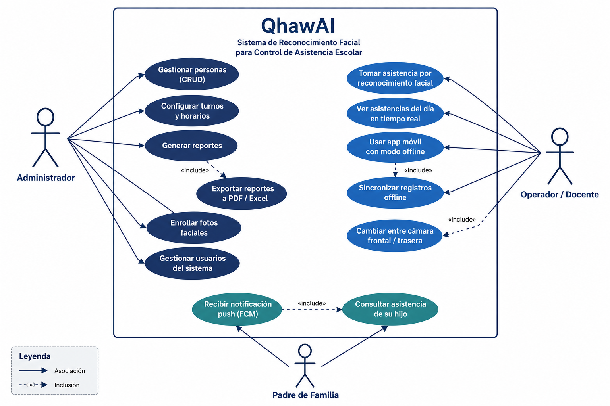
4.2 Diagrama de Secuencia — Reconocimiento Facial
Flujo completo desde que el operador inicia la cámara hasta que la asistencia queda registrada en MySQL y el padre recibe la notificación push.
- 1Operador presiona "Iniciar" → Navegador solicita acceso a la cámara con
getUserMedia() - 2JavaScript captura un frame cada 200 ms como base64 JPEG (75% calidad)
- 3
POST /attendance/recognize→ Laravel reenvía a FastAPIPOST /api/recognize(Docker :80) - 4FastAPI: YOLO-Face detecta rostros → ArcFace genera embeddings → compara con base registrada
- 5FastAPI retorna
{faces, is_late, minutos_tarde, paths}; guarda fotos en background thread - 6Laravel:
INSERT asistenciaen MySQL →notifyParents()→ envía push FCM al padre - 7Navegador recibe JSON → actualiza overlay en canvas y paneles laterales en tiempo real
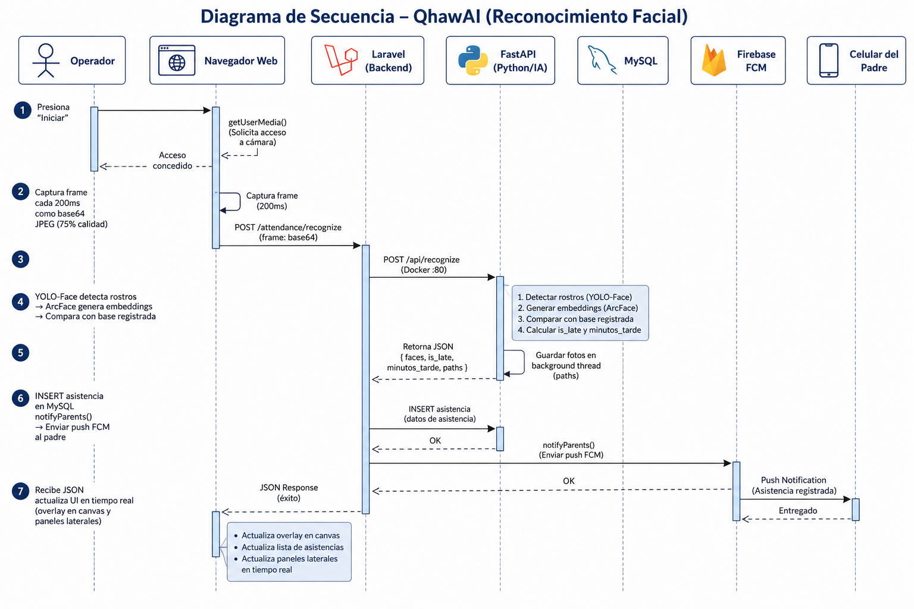
4.3 Diagrama de Estados — Registro de Asistencia
Ciclo de vida de un registro de asistencia desde que se detecta un rostro hasta el estado final almacenado en la base de datos.
→ Procesando (rostro detectado)
→ Verificar duplicado (dni+fecha)
→ Verificar horario de corte
→ Calcular tardanza
→ Guardado en BD
→ Notificación push enviada
Ya registrado hoy → Duplicado — Ignorado
Fuera de horario de corte → Fuera de Tiempo
Confianza < umbral → Rechazado
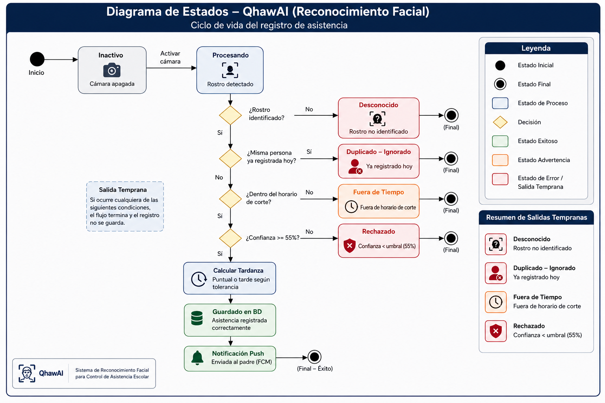
4.4 Modelos Principales
password · role
phone · fcm_token
is_super_admin
nombre · tipo
grado_id · seccion_id
turno · area
enrollment_complete
fecha · hora · turno
is_late · minutos_tarde
confidence_pct
face_image_path
full_frame_path
Anexo A — Matriz de Trazabilidad
| ID Req | Descripción | HU | Controller Laravel | API Python |
|---|---|---|---|---|
| RF-01 | Reconocimiento facial | HU-01 | AttendanceController::recognize | /api/recognize |
| RF-02 | Detección tardanza | HU-01 | AttendanceController | _calcular_tardanza() |
| RF-03 | Enrollment | HU-04 | EnrollmentController | /api/enroll |
| RF-04 | Modo offline | HU-05 | MobileDataController::sync | — |
| RF-05 | Notificaciones padres | HU-02 | AttendanceController::notify | — |
| RF-06 | Roles de usuario | HU-03 | LoginController, middleware role | — |
| RF-07 | Reportes | HU-03 | AttendanceController::reportData | — |
| RF-08 | Historial | HU-06 | AttendanceController::feed | — |
| RF-09 | Grados/Secciones | — | GradoController | — |
| RF-10 | Cambio de cámara | HU-01 | attendance/index.blade.php (JS) | — |
| RF-11 | GPS | HU-01 | AttendanceController | — |
| RF-12 | Evidencia fotográfica | HU-06 | Asistencia::foto_url/frame_url | _save_img() / _save_frame() |
| RF-13 | Panel admin | HU-03 | DashboardController, UsersController | — |
| RF-14 | Sync configuración | — | ConfiguracionController | /api/config/turnos |